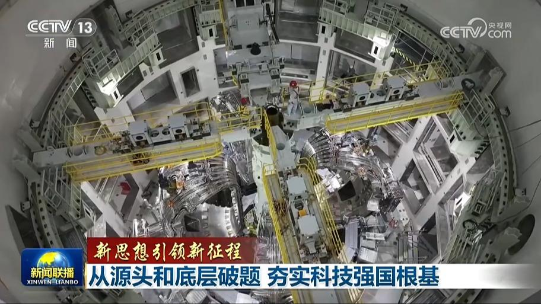
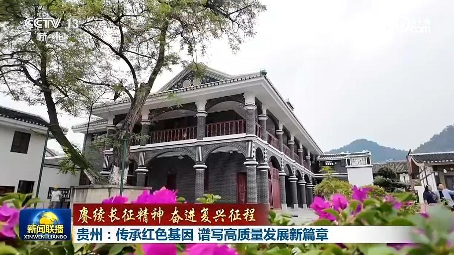
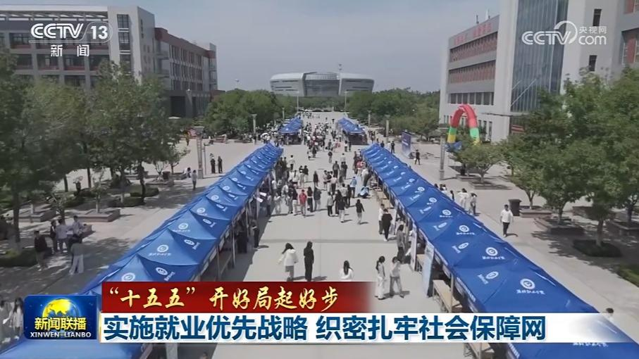
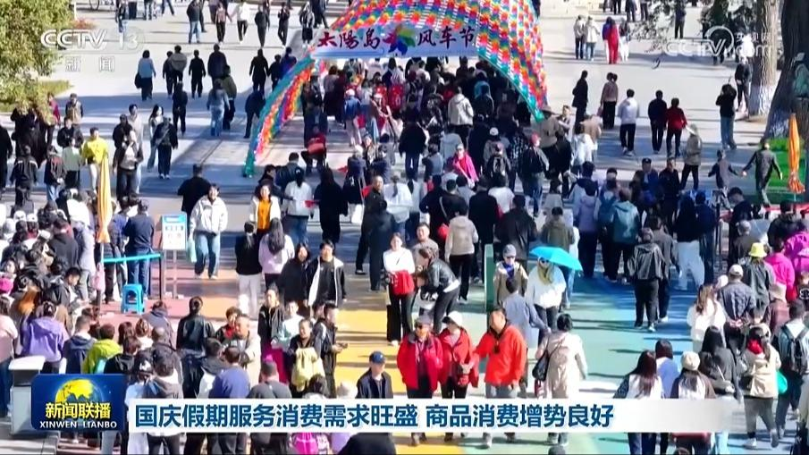
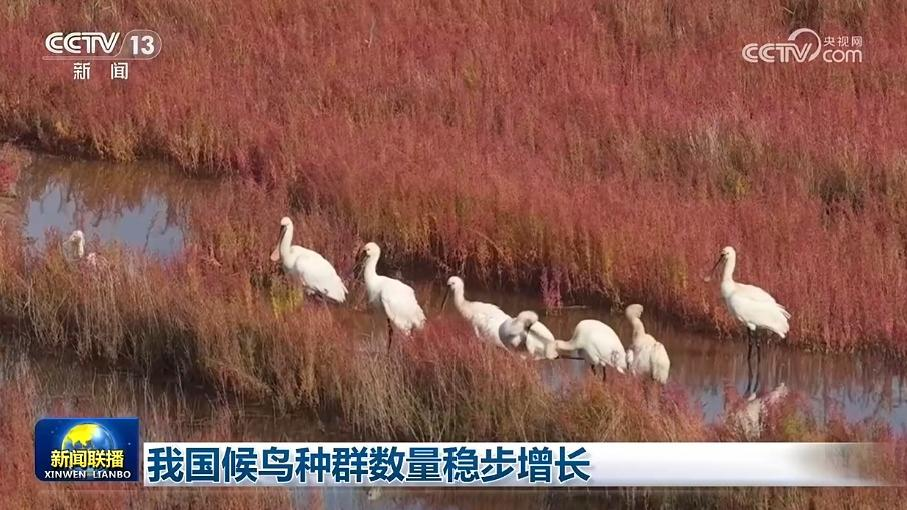
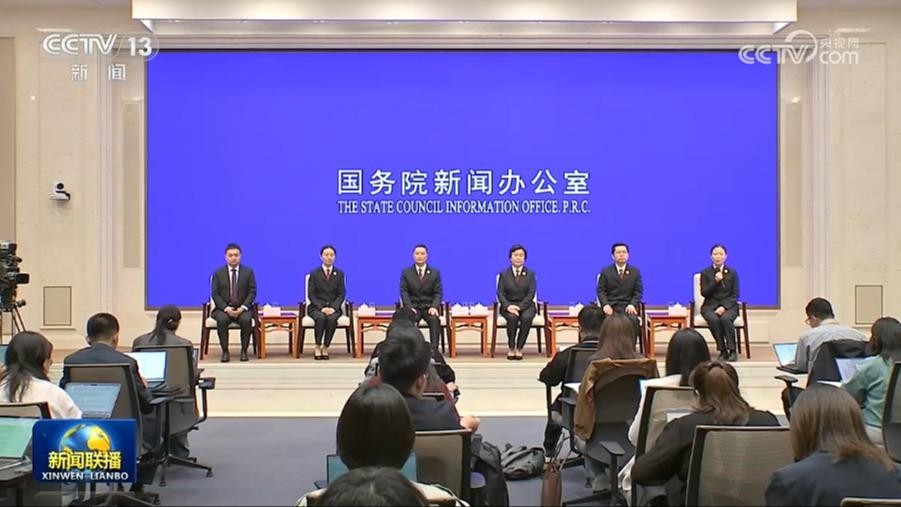
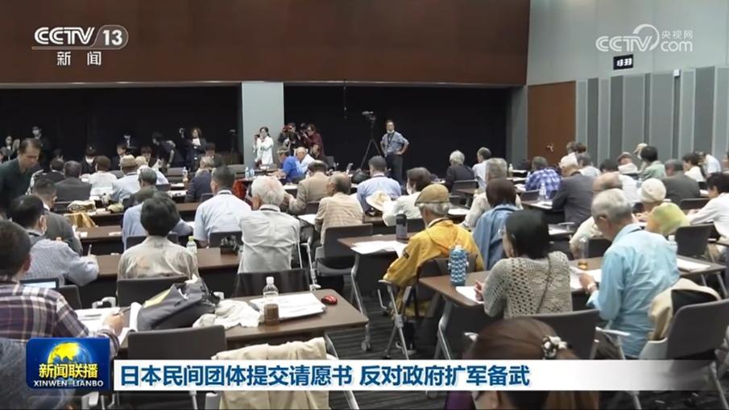

01

【新思想引领新征程】从源头和底层破题 夯实科技强国根基
基础研究是整个科学体系的源头，是所有技术问题的总机关。习近平总书记指出，“加强基础研究，是实现高水平科技自立自强的迫切要求，是建设世界科技强国的必由之路”。“十五五”开局之年，我国以更大力度、更实举措加强基础研究，一批从源头和底层破题的成果正在转化为高质量发展的新动能。


基础研究是整个科学体系的源头，是所有技术问题的总机关。习近平总书记指出，“加强基础研究，是实现高水平科技自立自强的迫切要求，是建设世界科技强国的必由之路”。“十五五”开局之年，我国以更大力度、更实举措加强基础研究，一批从源头和底层破题的成果正在转化为高质量发展的新动能。

贵州是红军长征过程中活动时间最长、活动范围最广的省份。岁月流转，伟大长征精神、遵义会议精神激励着贵州干部群众不断攻坚克难，奋进新征程。

国务院新闻办今天（10月10日）举行“开局起步‘十五五’”系列主题新闻发布会，人力资源社会保障部相关负责人介绍推进就业和社会保障高质量发展有关情况。
国家发展改革委国家信息中心今天（10月10日）发布多项先行指标，数据显示，我国经济回升向好态势持续巩固。
“寒露”已至，全国秋收进入高峰。农业农村部最新农情调度显示，我国秋粮收获过半，秋冬种陆续展开。

国家税务总局最新增值税发票数据显示，国庆期间，全国服务消费旺盛，相关行业日均销售收入同比增长19.5%。

记者从国家林草局获悉，近年来我国持续加强鸟类保护，栖息地质量得到提升，候鸟种群数量稳步增长。

国务院新闻办公室今天（10月10日）举行“新征程上的奋斗者”中外记者见面会。五位来自检察系统的代表围绕“强化检察监督，履行好国家法律监督机关职责”主题，分享各自在岗位上打击犯罪维护社会安宁、守护未成年人权益的故事，展现广大检察人员在新时代新征程上，忠实履行法律监督职责，维护公平正义、服务人民群众的使命担当和工作实绩。
第五届亚残运会中国体育代表团今天（10月10日）在北京成立。代表团总人数500人，其中，运动员312人，来自25个省区市，平均年龄28.8岁，将参加17个大项、335个小项的比赛。第五届亚残运会是我国参加境外亚残运会运动员规模最大的一届，将于10月18日至24日在日本举行，届时将有来自45个国家和地区的3000多名运动员参赛。
《国家残疾预防行动计划（2026—2030年）》印发

9日，来自日本冲绳、九州等地的41个民间团体在位于日本东京的参议院议员会馆，向日本防卫省、外务省等部门代表提交请愿书，表达对日本政府持续扩大防卫开支、推进军事部署的质疑和不满。
俄罗斯总统官网发布声明称，普京总统9日在同美国总统特朗普通话中，确认俄将向美国和全球市场提供石油和石油产品。普京认为，此举将对全球经济产生积极影响。
沙特主导联军称摧毁胡塞武装136处目标